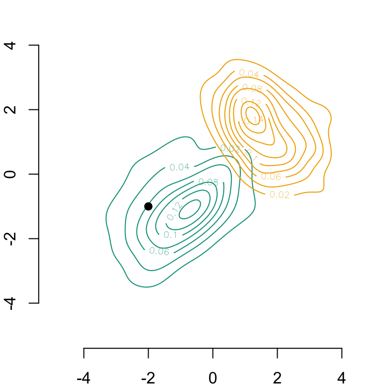
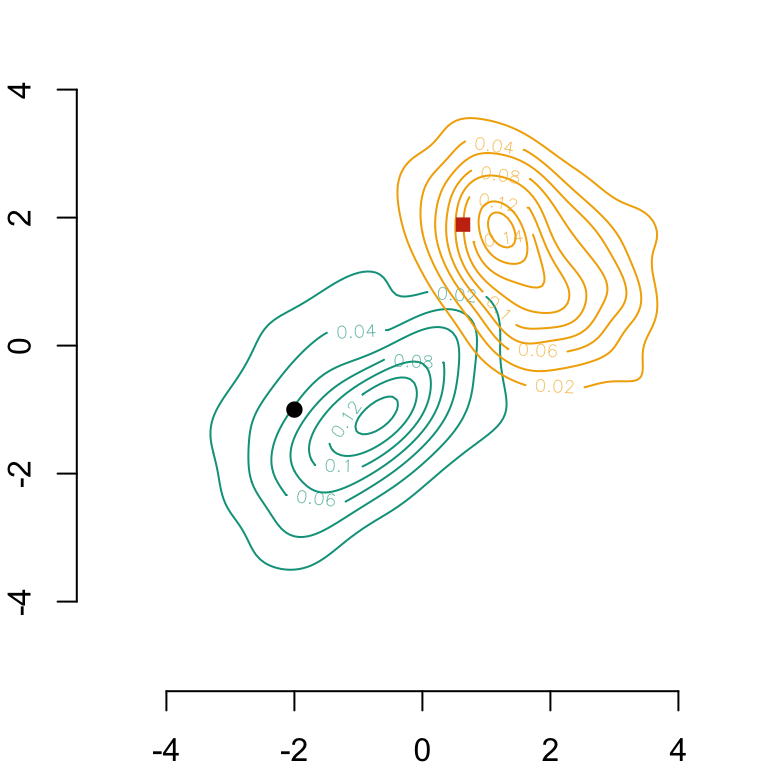
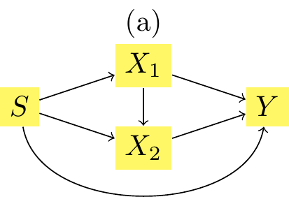
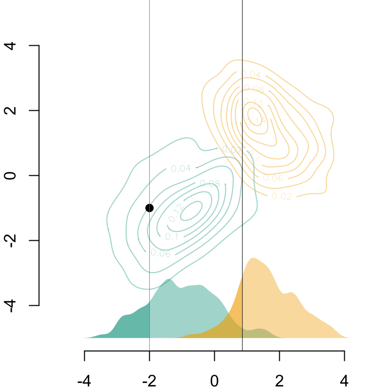
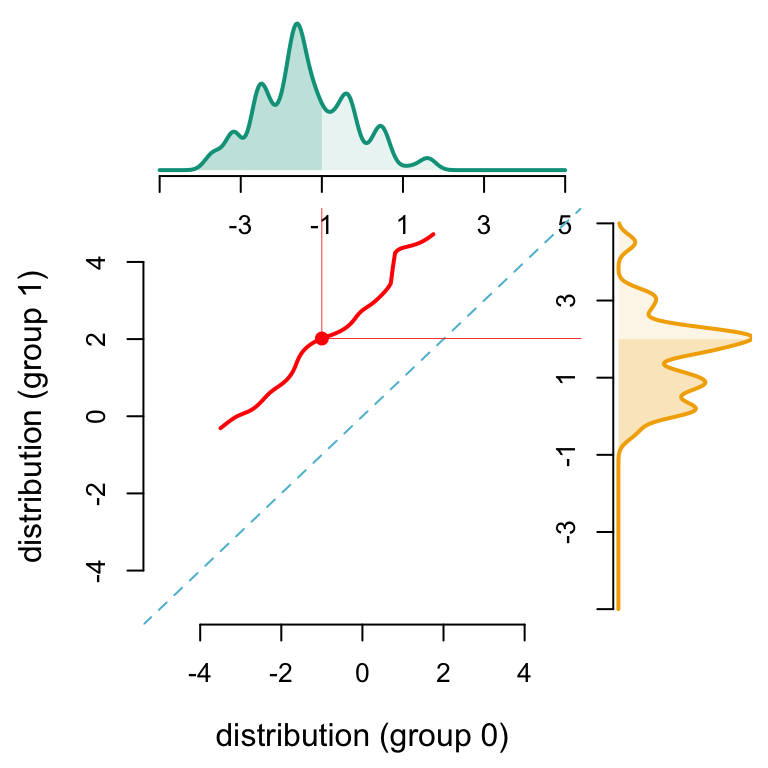
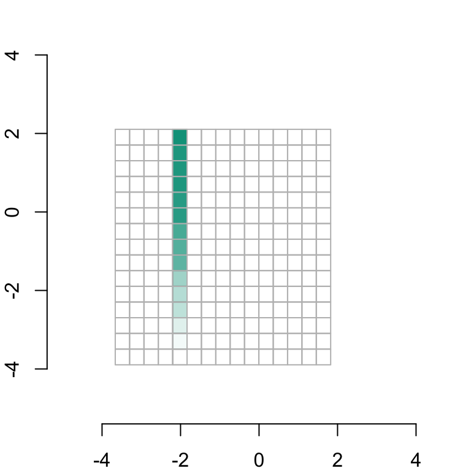
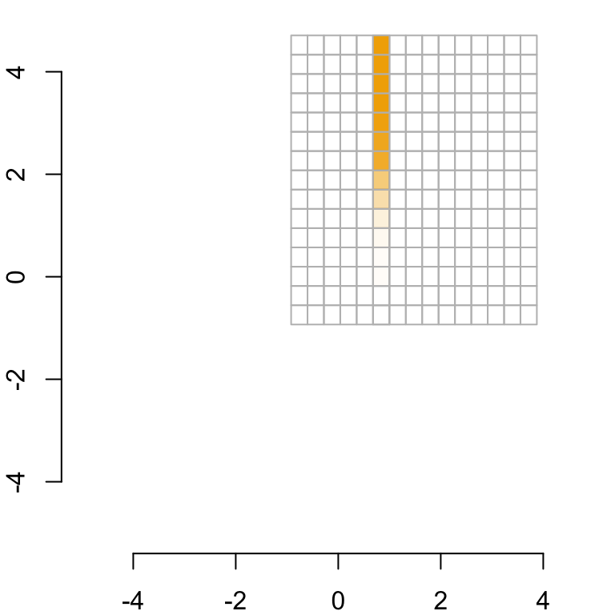
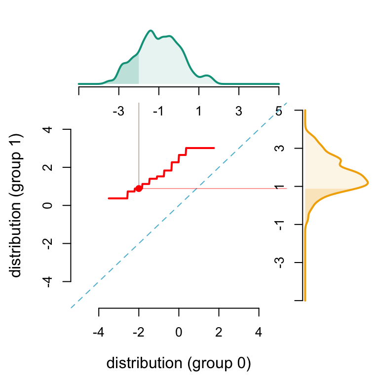
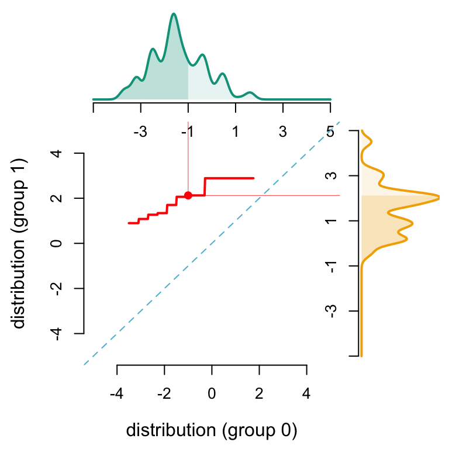

This chapter demonstrates the sequential transport methodology applied to simulated bivariate Gaussian distributions. The sensitive attribute \(S \in \left\{0,1\right\}\) is a binary variable, with each group \(S=0\) and \(S=1\), corresponding to a distinct bivariate Gaussian distribution. The objective is to transport \(\boldsymbol{X} = (X_1,X_2)\) from group \(S=0\) to group \(S=1\) and analyze the effects on predictions \(\hat{Y}\) obtained from a binary classifier. Here, the binary response variable \(Y\) is simulated using a logistic regression model based on the covariates \((S,\boldsymbol{X})\).
Required packages and definition of colours.
# Required packages----library(tidyverse)library(purrr)library(glue)library(igraph)library("wesanderson")library(scales)library(kableExtra)library(expm)library(magick)library(ks)library(pdftools)library(pbapply)library(parallel)# Graphs----colours <-c(`0`="#5BBCD6", `1`="#FF0000", A ="#00A08A", B ="#F2AD00", with ="#046C9A", without ="#C93312", `2`="#0B775E")# Seedset.seed(123)source("../functions/graphs.R")
2.1 Data
We start by drawing two bivariate Gaussian distributions, each reflecting one group from the sensitive attribute \(S \in \left\{0,1\right\}\).
# Number of observations per groupn <-100# First bivariate Gaussian distribution: group S=0M0 <-c(-1, -1)S0 <-matrix(c(1, .5, .5, 1) *1.2^2, 2, 2)X0 <- mnormt::rmnorm(n, M0, S0)D_SXY_0 <-data.frame(S =0,X1 = X0[, 1],X2 = X0[, 2])# Second bivariate Gaussian distribution: group S=1M1 <-c(1.5,1.5)S1 <-matrix(c(1, -.4, -.4, 1) * .9^2, 2, 2)X1 <- mnormt::rmnorm(n, M1, S1)D_SXY_1 <-data.frame(S =1,X1 = X1[, 1],X2 = X1[, 2])
Then, we simulate a binary response variable with a logistic model depending of covariates \((S,\boldsymbol{X})\).
# Drawing random binary response variable Y with logistic model for each groupeta_0 <- (D_SXY_0$X1 *1.2+ D_SXY_0$X2 /2* .8) /2eta_1 <- (D_SXY_1$X1 * .8+ D_SXY_1$X2 /2*1.2) /2p_0 <-exp(eta_0) / (1+exp(eta_0))p_1 <-exp(eta_1) / (1+exp(eta_1))D_SXY_0$Y <-rbinom(n, size =1, prob = p_0)D_SXY_1$Y <-rbinom(n, size =1, prob = p_1)# Final dataframeD_SXY <-rbind(D_SXY_0, D_SXY_1)
The contour lines of both bivariate Gaussian densities (corresponding to groups \(S=0\) and \(S=1\)) are displayed in the following graph.
Codes used to create the Figure.
D_SXY0 <- D_SXY[D_SXY$S ==0, ]D_SXY1 <- D_SXY[D_SXY$S ==1, ]# Computation of smoothing parameters (bandwidth) for kernel density estimationH0 <-Hpi(D_SXY0[, c("X1", "X2")])H1 <-Hpi(D_SXY1[, c("X1", "X2")])# Calculating multivariate densities in each group S=0 and S=1f0_2d <-kde(D_SXY0[, c("X1", "X2")], H = H0, xmin =c(-5, -5), xmax =c(5, 5))f1_2d <-kde(D_SXY1[, c("X1", "X2")], H = H1, xmin =c(-5, -5), xmax =c(5, 5))# Plotting densitiespar(mar =c(2,2,0,0))# Group S=0contour( f0_2d$eval.point[[1]], f0_2d$eval.point[[2]], f0_2d$estimate, col = colours["A"], axes =FALSE, xlab ="", ylab ="")axis(1)axis(2)# Group S=1contour( f1_2d$eval.point[[1]], f1_2d$eval.point[[2]], f1_2d$estimate, col = colours["B"], add =TRUE)# Display one individual on the graph in group S=0A =c(-2, -1)points(A[1], A[2], pch =19)
Bivariate Gaussian densities within each group (\(S=0\) on the left and \(S=1\) on the right), estimated with a Gaussian kernel

2.2 Optimal Transport
Since the covariates are Gaussian, we can use an explicit expression for the optimal transport: \[
\boldsymbol{x}_{1} = T^\star(\boldsymbol{x}_{0})=\boldsymbol{\mu}_{1} + \boldsymbol{A}(\boldsymbol{x}_{0}-\boldsymbol{\mu}_{0}),
\] where \(\boldsymbol{A}\) is a symmetric positive matrix that satisfies \(\boldsymbol{A}\boldsymbol{\Sigma}_{0}\boldsymbol{A}=\boldsymbol{\Sigma}_{1}\), which has a unique solution given by \(\boldsymbol{A}=\boldsymbol{\Sigma}_{0}^{-1/2}\big(\boldsymbol{\Sigma}_{0}^{1/2}\boldsymbol{\Sigma}_{1}\boldsymbol{\Sigma}_{0}^{1/2}\big)^{1/2}\boldsymbol{\Sigma}_{0}^{-1/2}\), where \(\boldsymbol{M}^{1/2}\) is the square root of the square (symmetric) positive matrix \(\boldsymbol{M}\) based on the Schur decomposition (\(\boldsymbol{M}^{1/2}\) is a positive symmetric matrix).
AA <-sqrtm(S0) %*% S1 %*% (sqrtm(S0))AA <-solve(sqrtm(S0)) %*%sqrtm(AA) %*%solve((sqrtm(S0)))T <-function(x) as.vector(M1 + AA %*% (x - M0))A_opt_transport <-T(c(A[1], A[2]))A_opt_transport
[1] 0.6353342 1.8903242
We can then display the transported individual on the same plot as before.
Codes used to create the Figure.
# Plotting densitiespar(mar =c(2,2,0,0))# Group S=0contour( f0_2d$eval.point[[1]], f0_2d$eval.point[[2]], f0_2d$estimate, col = colours["A"], axes =FALSE, xlab ="", ylab ="")axis(1)axis(2)# Group S=1contour( f1_2d$eval.point[[1]], f1_2d$eval.point[[2]], f1_2d$estimate, col = colours["B"], add =TRUE)# Display one individual on the graph in group S=0A =c(-2, -1)points(A[1], A[2], pch =19)# Display the transported individualpoints(A_opt_transport[1], A_opt_transport[2], pch =15, col ="#C93312")
Bivariate Gaussian densities within each group (\(S=0\) on the left and \(S=1\) on the right), estimated with a Gaussian kernel. The red square is the multivariate OT of the point.

2.3 Sequential Transport
In this part, we apply the sequential transport methodology by using Algorithm 1 from the article. We have two possible schemes for transport: \(X_1\) then \(X_2|X_1\), or \(X_2\) then \(X_1|X_2\). We will assume the first one:
Figure 2.1: Causal network with two legitimate mitigating variables \(x_1\) and \(x_2\).

To obtain the counterfactuals based on the methodology presented in the article, i.e., on sequential transport using a causal graph, we can use Algorithm 2.1.
\begin{algorithm} \caption{Sequential transport on causal graph} \begin{algorithmic} \Require graph $\mathcal{G}$ on $(s,\boldsymbol{x})$, with adjacency matrix $\boldsymbol{A}$ \Require dataset $(s_i,\boldsymbol{x}_i)$ and one individual $(s=0,\boldsymbol{a})$ \Require bandwidths $\boldsymbol{h}$ and $\boldsymbol{b}_j$'s \State $(s,\boldsymbol{v})\gets\boldsymbol{A}$ the topological ordering of vertices (DFS) \State $T_s\gets\text{identity}$ \For{$j\in \boldsymbol{v}$} \State $\boldsymbol{p}(j) \gets \text{parents}(j)$ \State $T_j(\boldsymbol{a}_{\boldsymbol{p}(j)})\gets (T_{\boldsymbol{p}(j)_1}(\boldsymbol{a}_{\boldsymbol{p}(j)}),\cdots,T_{\boldsymbol{p}(j)_{k_j}}(\boldsymbol{a}_{\boldsymbol{p}(j)}))$ \State $(x_{i,j|s},\boldsymbol{x}_{i,\boldsymbol{p}(j)|s})\gets$ subsets when $s\in\{0,1\}$ \State $w_{i,j|0}\gets \phi(\boldsymbol{x}_{i,\boldsymbol{p}(j)|0};\boldsymbol{a}_{\boldsymbol{p}(j)},\boldsymbol{b}_j)$ (Gaussian kernel) \State $w_{i,j|1}\gets \phi(\boldsymbol{x}_{i,\boldsymbol{p}(j)|1};T_j(\boldsymbol{a}_{\boldsymbol{p}(j)}),\boldsymbol{b}_j)$ \State $\hat{f}_{h_j|s}\gets \text{density estimator}$ of $x_{\cdot,j|s}$, weights $w_{\cdot,j|s}$. \State $\hat{F}_{h_j|s}(\cdot)\gets\displaystyle\int^{~\cdot}_{-\infty}\hat{f}_{h_j|s}(u)\mathrm{d}u$, c.d.f. \State $\hat{Q}_{h_j|s}\gets \hat{F}_{h_j|s}^{-1}$, quantile \State $\hat{T}_{j}(\cdot)\gets\hat{Q}_{h_j|1}\circ \hat{F}_{h_j|0}(\cdot)$ \EndFor \State $\boldsymbol{a}^\star\gets (T_{1}(\boldsymbol{a}_{1}),\cdots,T_{d}(\boldsymbol{a}_{d}))$\\ \Return $(s=1,\boldsymbol{a}^\star)$, counterfactual of $(s=0,\boldsymbol{a})$ \end{algorithmic} \end{algorithm}
2.3.1 Transport of \(X_1\)
Following Algorithm Algorithm 2.1 for Sequential Transport and the causal graph in Figure Figure 3.13, we begin by transporting \(X_1\) from subset \(S=0\) to subset \(S=1\). Since \(X_1\) is the first variable to be transported and has no parents, we use optimal transport for univariate distributions, applying the function estimated on \(X_1\) from the data, \(\hat{F}{1|0} \circ \hat{Q}{1|1}\). Because \(X_1\) has no parents, we can compute the cdf’s and quantile functions directly on all subgroups without the need for conditioning, thus eliminating the need for Gaussian kernels in this step (we simply use uniform weights).
# Uniform weights: density of X1 for subset S=0w0 <-rep(1,length(D_SXY0[, "X1"])) /length(D_SXY0[, "X1"])d0x1 <-function(x) { dens <-density( D_SXY0[, "X1"],bw = .2,weights = w0,from = x, to = x, n =1 ) dens$y}# Uniform weights: density of X1 for subset S=1w1 <-rep(1,length(D_SXY1[, "X1"])) /length(D_SXY1[, "X1"])d1x1 <-function(x) { dens <-density( D_SXY1[, "X1"],bw = .2,weights = w1,from = x, to = x, n =1 ) dens$y}# cdf of X1 for subset S=0FD0x1 <-function(x, denom =NULL) { x_val <-seq(-10, x, by = .0025)if (is.null(denom)) { x_val_2 <-seq(-10, 10, by = .0025) denom <-sum(map_dbl(x_val_2, d0x1)) }sum(map_dbl(x_val, d0x1)) / denom}FD0x1_denom <-map_dbl(seq(-10, 10, by = .0025), d0x1) |>sum()# cdf of X1 for subset S=1FD1x1 <-function(x, denom =NULL) { x_val <-seq(-10, x, by = .0025)if (is.null(denom)) { x_val_2 <-seq(-10, 10, by = .0025) denom <-sum(map_dbl(x_val_2, d1x1)) }sum(map_dbl(x_val, d1x1)) / denom}FD1x1_denom <-map_dbl(seq(-10, 10, by = .0025), d1x1) |>sum()# Definition of the inverse functioninverse <-function (f, lower =-100, upper =100, denom =NULL) {function (y) as.numeric(uniroot((function (x) f(x, denom = denom) - y), lower = lower, upper = upper)[1] )}# Quantile function of X1 for subset S=1QD1x1 <-inverse(FD1x1, -10, 10, denom = FD1x1_denom)# Transport function for X1T_X1 <-function(x) as.numeric(QD1x1(FD0x1(x, denom = FD0x1_denom)))
We start by applying function T_X1 above to transport only on the variable \(X_1\).
x1_grid_t <-seq(-3.5, 1.75, length =101)
# This code is not run in this document, it was run beforencl <-detectCores()-1(cl <-makeCluster(ncl))clusterEvalQ(cl, {library(purrr)}) |>invisible()clusterExport(cl, c("w0" ,"w1", "D_SXY0", "D_SXY1", "FD0x1_denom", "FD1x1_denom"))clusterExport(cl, c("FD0x1", "FD1x1", "d0x1", "d1x1", "inverse", "QD1x1"))x1_star_grid_t <-pblapply(x1_grid_t, T_X1, cl = cl) |>list_c()stopCluster(cl)save(x1_star_grid_t, file ="../data/x1_grid_transport.rda")
The application of transport on \(X_1\) takes approximately 3 minutes to run. When creating this document, we load the pre-saved file to save time, so that we do not need to calculate T_X1 over the grid.
load("../data/x1_grid_transport.rda")
We will depict the resulting mapping for all observations. The densities of \(X_1\) given groups \(S=0\) and \(S=1\) are calculated especially for the graphs.
# Calculation of densities with grid values for X1 x1_grid_d <-seq(-5, 5, length =251)density_x1_0 <-map_dbl(x1_grid_d, d0x1)d_0 <-data.frame(x = x1_grid_d, y = density_x1_0)# Density of X1 in subset 1density_x1_1 <-map_dbl(x1_grid_d, d1x1)d_1 <-data.frame(x = x1_grid_d, y = density_x1_1)
In the following graphs, the example of the transportation of one individual with \(S=0\) will be displayed:
# Individual from subset S=0 to transportx1 <--2x2 <--1
Using the function T_X1 created earlier, we can transport the example individual from subset \(S=0\) to subset \(S=1\) along its first coordinate \(x_1\).
x1_star <-T_X1(x1)
We also calculate the indices of \(X_1\) grids that are below this individual (\(x_1\)) and its counterfactual (\(x_1^*\)) in order to plot the cdf’s of \(X_1\) in both subsets \(S=0\) and \(S=1\) in the following graphs:
# Define indices of X1 grid idx1 <-which(d_0$x <= x1)idx1_star <-which(d_0$x <= x1_star)
Here, we plot the optimal transport curve for \(X_1\) from subset \(S=0\) to subset \(S=1\) with the densities corresponding to each subset. Additionnally, the result for the individual from above is displayed.
Codes used to create the Figure.
# Graph parameterspar(mar =c(2,2,0,0))limA <-c(-5, 5)limB <-c(-5, 5) limY <-c(0, .5)lab <-c("A", "B")sub <-6{ mat <-matrix(c(1, 2, 0, 3), 2)par(mfrow =c(2, 2))layout(mat, c(3.5, 1), c(1, 3))par(mar =c(0.5, 4.5, 0.5, 0.5))}# Plot density of X1 in subset S=0plot( d_0$x, d_0$y, type ="l", col = colours[lab[1]], lwd =2,axes =FALSE, xlab ="", ylab ="", xlim = limA, ylim = limY)polygon(c(min(d_0$x), d_0$x, max(d_0$x)), c(0, d_0$y, 0), col = scales::alpha(colours[lab[1]], 0.1), border =NA)# Plot cdf of X1 in subset S=0polygon(c(min(d_0$x), d_0$x[idx1], max(d_0$x[idx1])),c(0, d_0$y[idx1], 0),col = scales::alpha(colours["A"], .2),border =NA)# Add x-axis for density and cdfaxis(1, at =seq(limA[1], limA[2], length = sub), label =c(NA, seq(limA[1], limA[2], length = sub)[-1]))# Plot transport line on X1 from S=0 to S=1par(mar =c(4.5, 4.5, 0.5, 0.5))plot( x1_grid_t, x1_star_grid_t, col = colours["1"], lwd =2, type ="l", xlab ="", ylab ="", xlim = limA, ylim = limB, axes =FALSE)# Identity function lineabline(a =0, b =1, col = colours["0"], lty =2)# Add x-axis and y-axis of the transport lineaxis(1)axis(2)# Legendmtext("distribution (group 0)", side =1, line =3, col ="black")mtext("distribution (group 1)", side =2, line =3, col ="black")# Plot individual from subset S=0points(x1, x1_star, pch =19, col = colours["1"])segments(x1, x1_star, x1, 10, lwd = .4, col = colours["1"])segments(x1, x1_star, 10, x1_star, lwd = .4, col = colours["1"])# Plot density of X1 in subset S=1par(mar =c(4.5, 0.5, 0.5, 0.5))plot( d_1$y, d_1$x, type ="l", col = colours[lab[2]], lwd =2, ylim = limB, xlim = limY, xlab ="", ylab ="", axes =FALSE)polygon(c(0, d_1$y, 0), c(min(d_1$x), d_1$x, max(d_1$x)), col = scales::alpha(colours[lab[2]], 0.1), border =NA)# Plot cdf of X1 in subset S=1polygon(c(0, d_1$y[idx1_star], 0),c(min(d_1$x), d_1$x[idx1_star], max(d_1$x[idx1_star])),col = scales::alpha(colours["B"], .2),border =NA)# Add y-axis for density and cdfaxis(2, at =seq(limB[1], limB[2], length = sub), label =c(NA, seq(limB[1], limB[2], length = sub)[-c(1, sub)], NA))
Figure 2.2: Illustration of Algorithm 2.1 for DAG in Figure 3.13 with simulated data. First step: transport of \(X_1\) from \(S=0\) to \(S=1\)
Then we plot the counterfactual obtained from sequential transport on \(X_1\) (which corresponds to univariate optimal transport) for the individual, on the contour lines of both groups \(S=0\) and \(S=1\).
Codes used to create the Figure.
# Graph parameterspar(mar =c(2,2,0,0))# Contour line of bivariate Gaussian density for subset S=0contour( f0_2d$eval.point[[1]], f0_2d$eval.point[[2]], f0_2d$estimate, col = scales::alpha(colours["A"], .4),axes =FALSE, xlab ="", ylab ="")# Contour line of bivariate Gaussian density for subset S=1contour( f1_2d$eval.point[[1]], f1_2d$eval.point[[2]], f1_2d$estimate, col = scales::alpha(colours["B"], .4), add =TRUE)# Add x-axis and y-axisaxis(1)axis(2)# Plot density of X1 for subset S=0polygon(c(min(d_0$x), d_0$x, max(d_0$x)), c(0, d_0$y, 0) *5-5, col = scales::alpha(colours[lab[1]], 0.4), border =NA)# Add cdf of X1 for subset S=0polygon(c(min(d_0$x), d_0$x[idx1], max(d_0$x[idx1])), c(0, d_0$y[idx1],0) *5-5,col = scales::alpha(colours["A"], 0.4),border =NA)# Plot density of X1 for subset S=1polygon(c(min(d_1$x), d_1$x, max(d_1$x)),c(0, d_1$y, 0) *5-5, col = scales::alpha(colours[lab[2]], 0.4), border =NA)# Add cdf of X1 for subset S=1polygon(c(min(d_1$x), d_1$x[idx1_star], max(d_1$x[idx1_star])), c(0, d_1$y[idx1_star],0) *5-5,col = scales::alpha(colours["B"], .4),border =NA)# Plot example individual from subset S=0points(x1, x2, pch =19)abline(v = x1, lwd = .4, col = colours["A"])abline(v = x1_star, col ="black", lwd = .5)# Display the transported individualpoints(A_opt_transport[1], A_opt_transport[2], pch =15, col ="#C93312")
Figure 2.3: Illustration of Algorithm 2.1 for DAG in Figure 3.13 with simulated data. First step: transport of \(X_1\) from \(S=0\) to \(S=1\). The green vertical line show the coordinate \(x_1\) of the individual. The yellow vertical line is the transported value in group \(S=1\). The red square is the multivariate OT of the point.

2.3.2 Transport of \(X_2|X_1\)
Secondly, according to Figure Figure 3.13, we transport \(X_2\) from subset \(S=0\) to subset \(S=1\), using conditional transport for univariate distribution \(X_2|X_1\) as \(X_1\) is the only parent of \(X_2\). Following Algorithm 2.1, we apply the following function estimated on \(X_2\) and \(X_1\) from data \(\hat{F}_{2|0} \circ \hat{Q}_{2|1}\). Here the empirical cdf’s and quantile functions need to be estimated conditionally on \(X_1\). To do so, we first estimate densities of \(X_2\) in both subsets \(S=0\) and \(S=1\) with weights on \(X_1\) calculated with Gaussian kernels for each sensitive group. Here, we will only condition the distribution of \(X_2\) in subset \(S=0\) (resp. \(S=1\)) on the example value \(x_1\) (resp. \(x_1^*\)).
# Bandwidth for Gaussian kernelsh <-0.5# Weighted density of X2 for subset S=0w0 <-dnorm(D_SXY0[, "X1"], x1, h)w0 <- w0 /sum(w0)d0x2cx1 <-function(x) { dens <-density( D_SXY0[, "X2"],bw = .2,weights = w0,from = x, to = x, n =1 ) dens$y}# Weighted density of X2 for subset S=1w1 <-dnorm(D_SXY0[, "X1"], x1_star, h)w1 <- w1/sum(w1)d1x2cx1 <-function(x) { dens <-density( D_SXY1[, "X2"],bw = .2, weights = w1, from = x, to = x, n =1 ) dens$y}# cdf of X2 for subset S=0FD0x2 <-function(x, denom =NULL) { x_val <-seq(-10, x, by = .0025)if (is.null(denom)) { x_val_2 <-seq(-10, 10, by = .0025) denom <-map_dbl(x_val_2, d0x2cx1) |>sum() }sum(map_dbl(x_val, d0x2cx1)) / denom}FD0x2_denom <-map_dbl(seq(-10, 10, by = .0025), d0x2cx1) |>sum()# cdf of X2 for subset S=1FD1x2 <-function(x, denom =NULL) { x_val <-seq(-10, x, by = .0025)if (is.null(denom)) { x_val_2 <-seq(-10, 10, by = .0025) denom <-map_dbl(x_val_2, d1x2cx1) |>sum() }sum(map_dbl(x_val, d1x2cx1)) / denom}FD1x2_denom <-map_dbl(seq(-10, 10, by = .0025), d1x2cx1) |>sum()# Definition of the inverse functioninverse <-function (f, lower =-100, upper =100, denom) {function (y) as.numeric(uniroot((function (x) f(x, denom = denom) - y), lower = lower, upper = upper)[1] )}# Quantile function of X2 for subset S=1QD1x2 <-inverse(FD1x2, -10, 10, denom = FD1x2_denom)# Transport function for X2|X1=x1T_X2_c_x1 <-function(x) as.numeric(QD1x2(FD0x2(x, denom = FD0x2_denom)))
Next, we plot the optimal transport curve for \(X_2|X_1\) from subset \(S=0\) to subset \(S=1\) with the densities corresponding to each subset. Additionnally, the result for the individual from above is displayed. We use the same graph parameters than above.
We start by applying function T_X2_c_x1 above to transport the variable \(X_2|X_1=x_1\).
Once again, because the application of transport on \(X_2|X_1\) takes approximately 3 minutes, we will only load the file presaved and we don’t need to calculate T_X2_c_x1 over the grid.
load("../data/x2_grid_transport.rda")
We will depict the resulting mapping for all observations. The density of \(X_2|X_1=x_1\) (resp. \(X_2|X_1=x_1^*\)) for group \(S=0\) (reps. \(S=1\)) is calculated especially for the graphs.
# Calculation of densities with grid values for X2 density_x2cx1_0 <-map_dbl(d_0$x, d0x2cx1)density_x2cx1_1 <-map_dbl(d_1$x, d1x2cx1)
In the following graphs, the example of the transportation of one individual with \(S=0\) will be displayed:
x2_c_x1_star <-T_X2_c_x1(x2)
We also calculate the indices of \(X_2\) grids that are below this individual (\(x_2\)) and its counterfactual (\(x_2^*\)) in order to plot the cdf’s of \(X_2|X_1=x_1\) in both subsets \(S=0\) and \(S=1\) in the following graphs:
# Define indices of X1 grid idx2 <-which(d_0$x <= x2)idx2_star <-which(d_0$x <= x2_c_x1_star)
Here, we plot the optimal transport curve for \(X_2|X_1\) from subset \(S=0\) to subset \(S=1\) with the densities corresponding to each subset (calculated with Gaussian kernels). Additionnally, the result for the individual from above is displayed.
Codes used to create the Figure.
# Graph parameterspar(mar =c(2,2,0,0)){ mat <-matrix(c(1, 2, 0, 3), 2)par(mfrow =c(2, 2))layout(mat, c(3.5, 1), c(1, 3))par(mar =c(0.5, 4.5, 0.5, 0.5))}# Plot density of X2|X1 in subset S=0 with weights w0plot( d_0$x, density_x2cx1_0, type ="l", col = colours[lab[1]], lwd =2,axes =FALSE, xlab ="", ylab ="", xlim = limA, ylim = limY)polygon(c(min(d_0$x), d_0$x, max(d_0$x)), c(0, density_x2cx1_0, 0), col = scales::alpha(colours[lab[1]], 0.1), border =NA)# Plot cdf of X1 in subset S=0 with weights w0polygon(c(min(d_0$x), d_0$x[idx2], max(d_0$x[idx2])), c(0, density_x2cx1_0[idx2], 0),col = scales::alpha(colours["A"], .2),border =NA)# Add x-axis for cdf and densityaxis(1, at =seq(limA[1], limA[2], length = sub), label =c(NA, seq(limA[1], limA[2], length = sub)[-1]))# Plot transport line for X2|X1 from subset S=0 to S=1par(mar =c(4.5, 4.5, 0.5, 0.5))plot( x2_grid_t, x2_star_grid_t, col = colours["1"], lwd =2,type ="l", xlab ="", ylab ="", xlim = limA, ylim = limB,axes =FALSE)abline(a =0, b =1, col = colours["0"], lty =2)# Add x-axis and y-axisaxis(1)axis(2)# Legendmtext("distribution (group 0)", side =1, line =3, col ="black")mtext("distribution (group 1)", side =2, line =3, col ="black")# Plot example individual on the transport linepoints(x2, x2_c_x1_star, pch =19, col = colours["1"])segments(x2, x2_c_x1_star, x2, 10, lwd = .4, col = colours["1"])segments(x2, x2_c_x1_star, 10, x2_c_x1_star, lwd = .4, col = colours["1"])# Plot density of X2|X1 in subset S=1 with weights w1par(mar =c(4.5, 0.5, 0.5, 0.5))plot( density_x2cx1_1, d_1$x, type ="l", col = colours[lab[2]], lwd =2,axes =FALSE, xlab ="", ylab ="", xlim = limY, ylim = limB)polygon(c(0, density_x2cx1_1, 0), c(min(d_1$x), d_1$x, max(d_1$x)),col = scales::alpha(colours[lab[2]], 0.1), border =NA)# Plot cdf of X1 in subset S=1 with weights w1polygon(c(0, density_x2cx1_1[idx2_star], 0), c(min(d_1$x), d_1$x[idx2_star], max(d_1$x[idx2_star])),col = scales::alpha(colours["B"], .2),border =NA)# Add y-axis for cdf and densityaxis(2, at =seq(limB[1], limB[2], length = sub), label =c(NA, seq(limB[1], limB[2], length = sub)[-c(1, sub)], NA))
Figure 2.4: Illustration of Algorithm 2.1 for DAG in Figure 3.13 with simulated data. Second step: transport of \(X_1|X_2\) from \(S=0\) to \(S=1\)

Then we plot the counterfactual obtained from sequential transport on \(X_2|X_1\) (which corresponds to univariate conditional transport) for the individual, on the contour lines of both groups \(S=0\) and \(S=1\).
Codes used to create the Figure.
# Graph parameterspar(mar =c(2, 2, 0, 0))# Contour lines for bivariate density of gaussian distribution in subset S=0contour( f0_2d$eval.point[[1]], f0_2d$eval.point[[2]], f0_2d$estimate, col = scales::alpha(colours["A"], .4), axes =FALSE, xlab ="", ylab ="")# x-axis and y-axisaxis(1)axis(2)# Contour lines for bivariate density of gaussian distribution in subset S=1contour( f1_2d$eval.point[[1]], f1_2d$eval.point[[2]], f1_2d$estimate, col = scales::alpha(colours["B"], .4), add =TRUE)# Plot the density of X2|X1 in subset S=0 with weights w0polygon(c(0, density_x2cx1_0, 0)*5-2, c(-5, d_0$x, 5), col = scales::alpha(colours[lab[1]], 0.4), border =NA)# Plot the cdf of X2|X1 in subset S=0polygon(c(0, density_x2cx1_0[idx2], 0) *5-2,c(min(d_0$x), d_0$x[idx2], max(d_0$x[idx2])),col = scales::alpha(colours["A"], .4),border =NA)# Plot crossing lines (X1, X2) at example individual from subset S=0abline(v = x1, col = colours["A"], lwd = .5)abline(h = x2, col = colours[lab[1]], lwd = .5)points(x1, x2, pch=19)# Plot the density of X2|X1 in subset S=1 with weights w1polygon(c(0, density_x2cx1_1, 0) *5+ x1_star, c(-5, d_1$x, 5), col = scales::alpha(colours[lab[2]], 0.4), border =NA)# Plot the cdf of X2|X1 in subset S=1polygon(c(0, density_x2cx1_1[idx2_star], 0) *5+ x1_star,c(min(d_1$x), d_1$x[idx2_star], max(d_1$x[idx2_star])),col = scales::alpha(colours["B"], .4),border =NA)# Plot crossing lines (X1, X2) at example individual when transported to subset S=1abline(v = x1_star, col = colours[lab[2]], lwd = .5)abline(h = x2_c_x1_star, col ="black", lwd = .5)points(x1_star, x2_c_x1_star, pch=19)# Display the transported individualpoints(A_opt_transport[1], A_opt_transport[2], pch =15, col ="#C93312")
Illustration of Algorithm 2.1 for DAG in Figure 3.13 with simulated data. Second step: transport of \(X_2|X_1\) from \(S=0\) to \(S=1\). The green horizontal line show the coordinate \(x_2\) of the individual. The yellow horizontal line is the transported value in group \(S=1\). The red square is the multivariate OT of the point.
2.4 Faster Sequential Transport
In this part, we establish grids for \(X_1\) and \(X_2\) to calculate and store the cdf’s and quantile functions of the variables \(X_1\), \(X_2\), \(X_2|X_1\) and \(X_1|X_2\) for both subsets \(S=0\) and \(S=1\). This approach allows us to apply these functions to individuals based on their positions within the grids, rather than having to compute them each time. Instead of first calculating the cdf at \(X_1=x_1\) and then transporting it, we directly apply the cdf and quantile functions at the corresponding \(X_1\) grid position near \(x_1\). Then, for transporting \(X_2|X_1\), we start by storing the relevant cdf’s and quantile functions in a matrix, with rows corresponding to grid values for \(X_1\) and columns to grid values for \(X_2\). To apply the conditional cdf and quantile function to an individual \((s=0,x_1,x_2)\) i.e., sequential transport, rather than relying on Gaussian weights to define a neighborhood around \(x_1\), we define a window of width h around the midpoints of the grid cells for \(X_1\) and calculate cdf of \(X_2\) on this space.
In Algorithm 2.2 if \(j\) has no parents, \(\mathrm{parents}(j)=\varnothing\), \(d_j=0\) and then \(F_{j|s}\) and \(Q_{j|s}\) are vectors (of length \(k\)). In Algorithm 2.3, in that case, \(\boldsymbol{i}_0=\boldsymbol{i}_1=\varnothing\).
\begin{algorithm} \caption{Faster sequential transport on causal graph (1)} \begin{algorithmic} \Require graph on $(s,\boldsymbol{x})$, with adjacency matrix $\boldsymbol{A}$ \Require dataset $(s_i,\boldsymbol{x}_i)$ and $k\in\mathbb{N}$ some grid size, \Require grids $\boldsymbol{g}_{j|s}=({g}_{j,1|s},\cdots,{g}_{j,k|s})$, for all variable $j$ \Require grid $\boldsymbol{u}=(1,\cdots,k)/(k+1)$, for all $j$ \State $(s,\boldsymbol{v})\gets\boldsymbol{A}$ the topological ordering of vertices (DFS) \For{$j\in \boldsymbol{v}$} \State $\boldsymbol{p}(j) \gets \text{parents}(j)$, dimension $d_j$ \State $\mathcal{G}_{j|s}\gets$ grid $\boldsymbol{g}_{\boldsymbol{p}(j)_1|s}\times\cdots\times\boldsymbol{g}_{\boldsymbol{p}(j)_{d_j}|s}$ \State $F_{j|s}\gets$ tensors $k\times k^{d_j}$, taking values in $\boldsymbol{u}$ \State $Q_{j|s}\gets$ tensors $k\times k^{d_j}$, taking values in $\boldsymbol{g}_{j|s}$ \For{$\boldsymbol{i}=(i_1,\cdots,i_{d_j})\in\{1,\cdots,k\}^{d_j}$} \State $F_{j|s}[\cdot,\boldsymbol{i}]\gets$ c.d.f. of $X_j|\boldsymbol{X}_{\boldsymbol{p}(j)}=\boldsymbol{g}_{\boldsymbol{i}|s},S=s$ \State $Q_{j|s}[\cdot,\boldsymbol{i}]\gets$ quantile of $X_j|\boldsymbol{X}_{\boldsymbol{p}(j)}=\boldsymbol{g}_{\boldsymbol{i}|s},S=s$ \EndFor \EndFor \end{algorithmic} \end{algorithm}
\begin{algorithm} \caption{Counterfactual calculation on causal graph (2)} \begin{algorithmic} \Require $F_{1|s},\cdots,F_{d|s}$ and $Q_{d|s},\cdots,Q_{d|s}$ \Require grids $\boldsymbol{g}_{1|s},\cdots,\boldsymbol{g}_{d|s}$, $\mathcal{G}_{1|s},\cdots,\mathcal{G}_{d|s}$ and $\boldsymbol{u}$ \Require features $\boldsymbol{a}\in\mathbb{R}^d$ (group 0) \State $\boldsymbol{b}\gets \boldsymbol{a}$ \For{$j\in \boldsymbol{v}$} \State $\boldsymbol{i}_0\gets \boldsymbol{a}_{\boldsymbol{p}(j)}$ on grid $\mathcal{G}_{j|0}$ \State $k_0\gets a_j$ on grid $\boldsymbol{g}_{j|0}$ \State $p\gets F_{j|0}[k_0,\boldsymbol{i}_0]$ \State $\boldsymbol{i}_1\gets \boldsymbol{b}_{\boldsymbol{p}(j)}$ on grid $\mathcal{G}_{j|1}$ \State $k_1\gets p$ on grid $\boldsymbol{u}$ \State $b_j\gets Q_{j|1}[k_1,\boldsymbol{i}_1]$ \EndFor \Return $\boldsymbol{b}$ (counterfactual in group 1) \end{algorithmic} \end{algorithm}
Here, we redefine the outputs of sequential transport function in order to plot the different grids and associated cdf’s for \(X_2\) and \(X_1\) in both subsets \(S=0\) and \(S=1\).
#' Sequential transport#'#' @param data dataset with three columns:#' - S: sensitive attribute, transport from S_0 to the other group#' - X1: first predictor, assumed to be causally linked to S#' - X2: second predictor, assumed to be causally linked to S and X1#' @param S_0 Modality called group 0 to (source distribution)#' @param number of cells in each dimension (default to 15)#' @param h small value added to extend the area covered by the grid (default#' to .2)#' @param d neighborhood weight when conditioning by x1 (default to .5)transport_function_2 <-function(data, S_0,n_grid =15,h = .2,d = .5) {# Subset of the data: 0 for Black, 1 for White D_SXY_0 <- data[data$S == S_0, ] D_SXY_1 <- data[data$S != S_0, ]# Coordinates of the cells of the grid on subset of 0 (Black) vx1_0 <-seq(min(D_SXY_0$X1) - h, max(D_SXY_0$X1) + h, length = n_grid +1) vx2_0 <-seq(min(D_SXY_0$X2) - h, max(D_SXY_0$X2) + h, length = n_grid +1)# and middle point of the cells vx1_0_mid <- (vx1_0[2:(1+n_grid)]+vx1_0[1:(n_grid)]) /2 vx2_0_mid <- (vx2_0[2:(1+n_grid)]+vx2_0[1:(n_grid)]) /2# Coordinates of the cells of the grid on subset of 1 (White) vx1_1 <-seq(min(D_SXY_1$X1) -h, max(D_SXY_1$X1) + h, length = n_grid +1) vx1_1_mid <- (vx1_1[2:(1+ n_grid)] + vx1_1[1:(n_grid)]) /2# and middle point of the cells vx2_1 <-seq(min(D_SXY_1$X2) - h, max(D_SXY_1$X2) + h, length = n_grid +1) vx2_1_mid <- (vx2_1[2:(1+ n_grid)] + vx2_1[1:(n_grid)]) /2# Creation of the grids for the CDF and Quantile function# init with NA values# One grid for X1 and X2, on both subsets of the data (Black/White) F1_0 <- F2_0 <- F1_1 <- F2_1 <-matrix(NA, n_grid, n_grid) Q1_0 <- Q2_0 <- Q1_1 <- Q2_1 <-matrix(NA, n_grid, n_grid)# Empirical CDF for X1 on subset of Black FdR1_0 <-Vectorize(function(x) mean(D_SXY_0$X1 <= x)) f1_0 <-FdR1_0(vx1_0_mid)# Empirical CDF for X2 on subset of Black FdR2_0 <-Vectorize(function(x) mean(D_SXY_0$X2 <= x)) f2_0 <-FdR2_0(vx2_0_mid)# Empirical CDF for X1 on subset of White FdR1_1 <-Vectorize(function(x) mean(D_SXY_1$X1 <= x)) f1_1 <-FdR1_1(vx1_1_mid)# Empirical CDF for X2 on subset of White FdR2_1 <-Vectorize(function(x) mean(D_SXY_1$X2 <= x)) f2_1 <-FdR2_1(vx2_1_mid) u <- (1:n_grid) / (n_grid +1)# Empirical quantiles for X1 on subset of Black Qtl1_0 <-Vectorize(function(x) quantile(D_SXY_0$X1, x)) q1_0 <-Qtl1_0(u)# Empirical quantiles for X2 on subset of Black Qtl2_0 <-Vectorize(function(x) quantile(D_SXY_0$X2, x)) q2_0 <-Qtl2_0(u)# Empirical quantiles for X1 on subset of White Qtl1_1 <-Vectorize(function(x) quantile(D_SXY_1$X1, x)) q1_1 <-Qtl1_1(u)# Empirical quantiles for X2 on subset of White Qtl2_1 <-Vectorize(function(x) quantile(D_SXY_1$X2, x)) q2_1 <-Qtl2_1(u)for (i in1:n_grid) {# Subset of Black individuals idx1_0 <-which(abs(D_SXY_0$X1 - vx1_0_mid[i]) < d) FdR2_0 <-Vectorize(function(x) mean(D_SXY_0$X2[idx1_0] <= x)) F2_0[, i] <-FdR2_0(vx2_0_mid) Qtl2_0 <-Vectorize(function(x) quantile(D_SXY_0$X2[idx1_0], x)) Q2_0[, i] <-Qtl2_0(u) idx2_0 <-which(abs(D_SXY_0$X2 - vx2_0_mid[i]) < d) FdR1_0 <-Vectorize(function(x) mean(D_SXY_0$X1[idx2_0] <= x)) F1_0[, i] <-FdR1_0(vx1_0_mid) Qtl1_0 <-Vectorize(function(x) quantile(D_SXY_0$X1[idx2_0], x)) Q1_0[, i] <-Qtl1_0(u)# Subset of White individuals idx1_1 <-which(abs(D_SXY_1$X1 - vx1_1_mid[i]) < d) FdR2_1 <-Vectorize(function(x) mean(D_SXY_1$X2[idx1_1] <= x)) F2_1[, i] <-FdR2_1(vx2_1_mid) Qtl2_1 <-Vectorize(function(x) quantile(D_SXY_1$X2[idx1_1], x)) Q2_1[, i] <-Qtl2_1(u) idx2_1 <-which(abs(D_SXY_1$X2-vx2_1_mid[i])<d) FdR1_1 <-Vectorize(function(x) mean(D_SXY_1$X1[idx2_1] <= x)) F1_1[, i] <-FdR1_1(vx1_1_mid) Qtl1_1 <-Vectorize(function(x) quantile(D_SXY_1$X1[idx2_1], x)) Q1_1[, i] <-Qtl1_1(u) }# Transport for X2 T2 <-function(x2) { i <-which.min(abs(vx2_0_mid - x2)) p <- f2_0[i] i <-which.min(abs(u - p)) x2star <- q2_1[i] x2star }# Transport for X1 T1 <-function(x1) { i <-which.min(abs(vx1_0_mid - x1)) p <- f1_0[i] i <-which.min(abs(u - p)) x1star <- q1_1[i] x1star }# Transport for X2 conditional on X1 T2_cond_x1 <-function(x2, x1) { k0 <-which.min(abs(vx1_0_mid - x1)) k1 <-which.min(abs(vx1_1_mid -T1(x1))) i <-which.min(abs(vx2_0_mid - x2)) p <- F2_0[i, k0] i <-which.min(abs(u - p)) x2star <- Q2_1[i, k1] x2star }# Transport for X1 conditional on X2 T1_cond_x2 <-function(x1, x2) { k0 <-which.min(abs(vx2_0_mid - x2)) k1 <-which.min(abs(vx2_1_mid -T2(x2))) i <-which.min(abs(vx1_0_mid - x1)) p <- F1_0[i, k0] i <-which.min(abs(u - p)) x1star <- Q1_1[i, k1] x1star }list(Transport_x1 = T1,Transport_x2 = T2,Transport_x1_cond_x2 = T1_cond_x2,Transport_x2_cond_x1 = T2_cond_x1,vx1_0 = vx1_0,vx1_0_mid = vx1_0_mid,vx1_1 = vx1_1,vx1_1_mid = vx1_1_mid,vx2_0 = vx2_0,vx2_1 = vx2_1,f1_0 = f1_0,f1_1 = f1_1,F2_0 = F2_0,F2_1 = F2_1 )}# Application on the Gaussian databasen_grid <-15S_0 <-0seq_functions_grids <-transport_function_2(D_SXY, S_0 = S_0, n_grid = n_grid)
We first depict the grid for \(X_1\), computed on our Gaussian database, with the associated cdf’s in subsets \(S=0\) and \(S=1\).
# Grid for X1 in subset S=0vx1_0 <- seq_functions_grids$vx1_0# Midpoints of the cellsvx1_0_mid <- seq_functions_grids$vx1_0_mid# cdf (marginal) of X1 in subset S=0f1_0 <- seq_functions_grids$f1_0# Grid for X1 in subset S=1vx1_1 <- seq_functions_grids$vx1_1# Midpoints of the cellsvx1_1_mid <- seq_functions_grids$vx1_1_mid# cdf (marginal) of X1 in subset S=1f1_1 <- seq_functions_grids$f1_1# Add x-axispar(mar =c(2,2,0,0))plot( d_0$x, d_0$x*0, xlab ="", ylab ="", axes =FALSE, col =NA, ylim =c(.5, 2.5))axis(1)# Plot the cdf of X1 in subset S=0 with color scalefor (i in1:n_grid) {rect(vx1_0[i], .7, vx1_0[i+1], 0.6, col = scales::alpha(colours["A"], f1_0[i]),border ="grey" )}# Plot the cdf of X1 in subset S=1 with color scalefor (i in1:n_grid) {rect( vx1_1[i], .8, vx1_1[i+1], .9,col = scales::alpha(colours["B"], f1_1[i]),border ="grey" )}
Figure 2.5: Grid for \(X_1\)
Next we display the matrices of cdf’s for \(X_2|X_1\) in both subsets \(S=0\) and \(S=1\):
# Grid for X2 in subset S=0vx2_0 <- seq_functions_grids$vx2_0# cdf (conditional) of X2|X1 in subset S=0 (matrix)F2_0 <- seq_functions_grids$F2_0# Grid for X2 in subset S=1vx2_1 <- seq_functions_grids$vx2_1# cdf (conditional) of X2|X1 in subset S=1 (matrix)F2_1 <- seq_functions_grids$F2_1
First, we plot the matrix for subset \(S=0\) and highlight the column corresponding to the cdf of \(X_2|X_1=x_1\) for our example individual:
Codes used to create the Figure.
# Add x-axis and y-axis (for the matrices with cdf's)par(mar =c(2,2,0,0))plot(d_0$x, d_0$x, xlab ="", ylab ="", axes =FALSE, col =NA)axis(1)axis(2)# Add grid matrix of cdf's for X2|X1 in subset S=0for (i in1:n_grid) {for(j in1:n_grid) {rect(vx1_0[i], vx2_0[j], vx1_0[i+1], vx2_0[j+1], border="grey") }}# Column corresponding to X1=x1i <-which.min(abs(vx1_0_mid-x1))for (j in1:n_grid) {rect( vx1_0[i], vx2_0[j], vx1_0[i+1], vx2_0[j+1], col = scales::alpha(colours["A"], F2_0[j,i]),border="grey" )}
Figure 2.6: Matrix $F_{2|0}, with \(k=15\). The vertical vector is \(F_{2|0}[\cdot, i]\)

Next, we plot the matrix for subset \(S=1\) and highlight the column corresponding to the cdf of \(X_2|X_1=x_1^*\) for our example individual:
Codes used to create the Figure.
# Add x-axis and y-axis (for the matrices with cdf's)par(mar =c(2,2,0,0))plot(d_1$x, d_1$x, xlab ="", ylab ="", axes =FALSE, col =NA)axis(1)axis(2)# Add grid matrix of cdf's for X2|X1 in subset S=1for (i in1:n_grid) {for (j in1:n_grid) {rect(vx1_1[i], vx2_1[j], vx1_1[i +1], vx2_1[j +1], border ="grey") }}# Column corresponding to X1=x1_star (i.e., x1 transported)i <-which.min(abs(vx1_1_mid - x1_star))for (j in1:n_grid) {rect( vx1_1[i], vx2_1[j], vx1_1[i+1], vx2_1[j+1],col = scales::alpha(colours["B"], F2_1[j,i]),border ="grey" )}
Figure 2.7: Matrix $F_{2|1}, with \(k=15\). The vertical vector is \(F_{2|1}[\cdot, j]\)

Following Algorithm 2.2 for Sequential Transport and the causal graph in Figure Figure 3.13, we begin by transporting \(X_1\) from subset \(S=0\) to subset \(S=1\) xxx
T_X1 <- seq_functions_grids$Transport_x1
We start by applying function T_X1 above to transport only on the variable \(X_1\). We use more points in the grid than with Algorithm 2.1 because it is faster.
# Calculation of transport line for different values of X1 (grid)x1_grid_t <-seq(-3.5, 1.75, length =251)x1_star_grid_t <-Vectorize(T_X1)(x1_grid_t)
Using the function T_X1 created earlier, we can transport the example individual from subset \(S=0\) to subset \(S=1\) along its first coordinate \(x_1\).
x1_star <-T_X1(x1)
We also calculate the indices of \(X_1\) grids that are below this individual (\(x_1\)) and its counterfactual (\(x_1^*\)) in order to plot the cdf’s of \(X_1\) in both subsets \(S=0\) and \(S=1\) in the following graphs:
# Define indices of X1 grid idx1 <-which(d_0$x <= x1)idx1_star <-which(d_0$x <= x1_star)
Here, we plot the optimal transport curve for \(X_1\) from subset \(S=0\) to subset \(S=1\) with the densities corresponding to each subset. Additionnally, the result for the individual from above is displayed.
Codes used to create the Figure.
# Graph parameterspar(mar =c(2,2,0,0))limA <-c(-5, 5)limB <-c(-5, 5) limY <-c(0, .5)lab <-c("A", "B")sub <-6{ mat <-matrix(c(1, 2, 0, 3), 2)par(mfrow =c(2, 2))layout(mat, c(3.5, 1), c(1, 3))par(mar =c(0.5, 4.5, 0.5, 0.5))}# Plot density of X1 in subset S=0plot( d_0$x, d_0$y, type ="l", col = colours[lab[1]], lwd =2,axes =FALSE, xlab ="", ylab ="", xlim = limA, ylim = limY)polygon(c(min(d_0$x), d_0$x, max(d_0$x)), c(0, d_0$y, 0), col = scales::alpha(colours[lab[1]], 0.1), border =NA)# Plot cdf of X1 in subset S=0polygon(c(min(d_0$x), d_0$x[idx1], max(d_0$x[idx1])),c(0,d_0$y[idx1],0),col = scales::alpha(colours["A"], .2),border =NA)# Add x-axis for density and cdfaxis(1, at =seq(limA[1], limA[2], length = sub), label =c(NA, seq(limA[1], limA[2], length = sub)[-1]))# Plot transport line on X1 from S=0 to S=1par(mar =c(4.5, 4.5, 0.5, 0.5))u_grid <-seq(0, 1, length=261)u_grid <- u_grid[2:260]plot( x1_grid_t, x1_star_grid_t, col = colours["1"], lwd =2, type ="l", xlab ="", ylab ="", xlim = limA, ylim = limB, axes =FALSE)# Identity function lineabline(a =0, b =1, col = colours["0"], lty =2)# Add x-axis and y-axis of the transport lineaxis(1)axis(2)# Legendmtext("distribution (group 0)", side =1, line =3, col ="black")mtext("distribution (group 1)", side =2, line =3, col ="black")# Plot individual from subset S=0points(x1, x1_star, pch =19, col = colours["1"])segments(x1, x1_star, x1, 10, lwd = .4, col = colours["1"])segments(x1, x1_star, 10, x1_star, lwd = .4, col = colours["1"])# Plot density of X1 in subset S=1par(mar =c(4.5, 0.5, 0.5, 0.5))plot( d_1$y, d_1$x, type ="l", col = colours[lab[2]], lwd =2, ylim = limB, xlim = limY, xlab ="", ylab ="", axes =FALSE)polygon(c(0, d_1$y, 0), c(min(d_1$x), d_1$x, max(d_1$x)), col = scales::alpha(colours[lab[2]], 0.1), border =NA)# Plot cdf of X1 in subset S=1polygon(c(0, d_1$y[idx1_star], 0),c(min(d_1$x), d_1$x[idx1_star], max(d_1$x[idx1_star])),col = scales::alpha(colours["B"], .2),border =NA)# Add y-axis for density and cdfaxis(2, at =seq(limB[1], limB[2], length = sub), label =c(NA, seq(limB[1], limB[2], length = sub)[-c(1, sub)], NA))
Figure 2.8: Illustration of Algorithm 2.2 for DAG in Figure 3.13 with simulated data. First step: transport of \(X_1\) from \(S=0\) to \(S=1\)

Then we plot the counterfactual obtained from sequential transport on \(X_1\) (which corresponds to univariate optimal transport) for the individual, on the contour lines of both groups \(S=0\) and \(S=1\).
Codes used to create the Figure.
# Graph parameterspar(mar =c(2,2,0,0))# Contour line of bivariate Gaussian density for subset S=0contour( f0_2d$eval.point[[1]], f0_2d$eval.point[[2]], f0_2d$estimate, col = scales::alpha(colours["A"],.4),axes =FALSE, xlab ="", ylab ="")# Contour line of bivariate Gaussian density for subset S=1contour( f1_2d$eval.point[[1]], f1_2d$eval.point[[2]], f1_2d$estimate, col = scales::alpha(colours["B"], .4), add =TRUE)# Add x-axis and y-axisaxis(1)axis(2)# Plot density of X1 for subset S=0polygon(c(min(d_0$x), d_0$x, max(d_0$x)), c(0, d_0$y, 0)*5-5, col = scales::alpha(colours[lab[1]], 0.4), border =NA)# Add cdf of X1 for subset S=0polygon(c(min(d_0$x), d_0$x[idx1], max(d_0$x[idx1])),c(0, d_0$y[idx1],0) *5-5,col = scales::alpha(colours["A"], 0.4),border =NA)# Plot density of X1 for subset S=1polygon(c(min(d_1$x), d_1$x, max(d_1$x)),c(0, d_1$y, 0)*5-5, col = scales::alpha(colours[lab[2]], 0.4), border =NA)# Add cdf of X1 for subset S=1polygon(c(min(d_1$x), d_1$x[idx1_star], max(d_1$x[idx1_star])),c(0, d_1$y[idx1_star],0) *5-5,col = scales::alpha(colours["B"], .4),border =NA)# Plot example individual from subset S=0points(x1, x2, pch =19)abline(v = x1, lwd = .4, col = colours["A"])abline(v = x1_star, col ="black", lwd = .5)# Display the transported individualpoints(A_opt_transport[1], A_opt_transport[2], pch =15, col ="#C93312")
Figure 2.9: Illustration of Algorithm 2.2 for DAG in Figure 3.13 with simulated data. First step: transport of \(X_1\) from \(S=0\) to \(S=1\). The green vertical line show the coordinate \(x_1\) of the individual. The yellow vertical line is the transported value in group \(S=1\). The red square is the multivariate OT of the point.
Secondly, according to Figure Figure 3.13, we transport \(X_2\) from subset \(S=0\) to subset \(S=1\), using conditional transport for univariate distribution \(X_2|X_1\) as \(X_1\) is the only parent of \(X_2\). Following Algorithm 2.1, we apply the following function estimated on \(X_2\) and \(X_1\) from data \(\hat{F}_{2|0} \circ \hat{Q}_{2|1}\). Here the empirical cdf’s and quantile functions need to be estimated conditionally on \(X_1\). To do so, we first estimate densities of \(X_2\) in both subsets \(S=0\) and \(S=1\) with weights on \(X_1\) calculated with Gaussian kernels for each sensitive group. Here, we will only condition the distribution of \(X_2\) in subset \(S=0\) (resp. \(S=1\)) on the example value \(x_1\) (resp. \(x_1^*\)).
# Transport function for X2|X1=x1T_X2_c_x1 <- T_X1 <- seq_functions_grids$Transport_x2_cond_x1
Next, we plot the optimal transport curve for \(X_2|X_1\) from subset \(S=0\) to subset \(S=1\) with the densities corresponding to each subset. Additionnally, the result for the individual from above is displayed. We use the same graph parameters than above.
We start by applying function T_X2_c_x1 above to transport the variable \(X_2|X_1=x_1\). We still use more points in the grid because faster
# Calculation of transport line for different values of X2|X1=x1 (grid)x2_grid_t <-seq(-3.5, 1.75, length =251)x2_star_grid_t <-Vectorize(function(x) T_X2_c_x1(x, x1))(x2_grid_t)
In the following graphs, the example of the transportation of one individual with \(S=0\) will be displayed:
x2_c_x1_star <-T_X2_c_x1(x2, x1)
We also calculate the indices of \(X_2\) grids that are below this individual (\(x_2\)) and its counterfactual (\(x_2^*\)) in order to plot the cdf’s of \(X_2|X_1=x_1\) in both subsets \(S=0\) and \(S=1\) in the following graphs:
# Define indices of X1 grid idx2 <-which(d_0$x <= x2)idx2_star <-which(d_0$x <= x2_c_x1_star)
Here, we plot the optimal transport curve for \(X_2|X_1\) from subset \(S=0\) to subset \(S=1\) with the densities corresponding to each subset (calculated with Gaussian kernels). Additionnally, the result for the individual from above is displayed.
Codes used to create the Figure.
# Graph parameters{ mat <-matrix(c(1, 2, 0, 3), 2)par(mfrow =c(2, 2))layout(mat, c(3.5, 1), c(1, 3))par(mar =c(0.5, 4.5, 0.5, 0.5))}# Plot density of X2|X1 in subset S=0 with weights w0plot( d_0$x, density_x2cx1_0, type ="l", col = colours[lab[1]], lwd =2,axes =FALSE, xlab ="", ylab ="", xlim = limA, ylim = limY)polygon(c(min(d_0$x), d_0$x, max(d_0$x)), c(0, density_x2cx1_0, 0), col = scales::alpha(colours[lab[1]], 0.1), border =NA)# Plot cdf of X1 in subset S=0 with weights w0polygon(c(min(d_0$x), d_0$x[idx2], max(d_0$x[idx2])),c(0, density_x2cx1_0[idx2], 0),col = scales::alpha(colours["A"], .2),border =NA)# Add x-axis for cdf and densityaxis(1, at =seq(limA[1], limA[2], length = sub), label =c(NA, seq(limA[1], limA[2], length = sub)[-1]))# Plot transport line for X2|X1 from subset S=0 to S=1par(mar =c(4.5, 4.5, 0.5, 0.5))plot( x2_grid_t, x2_star_grid_t, col = colours["1"], lwd =2,type ="l", xlab ="", ylab ="", xlim = limA, ylim = limB,axes =FALSE)abline(a =0, b =1, col = colours["0"], lty =2)# Add x-axis and y-axisaxis(1)axis(2)# Legendmtext("distribution (group 0)", side =1, line =3, col ="black")mtext("distribution (group 1)", side =2, line =3, col ="black")# Plot example individual on the transport linepoints(x2, x2_c_x1_star, pch =19, col = colours["1"])segments(x2, x2_c_x1_star, x2, 10, lwd = .4, col = colours["1"])segments(x2, x2_c_x1_star, 10, x2_c_x1_star, lwd = .4, col = colours["1"])# Plot density of X2|X1 in subset S=1 with weights w1par(mar =c(4.5, 0.5, 0.5, 0.5))plot( density_x2cx1_1, d_1$x, type ="l", col = colours[lab[2]], lwd =2,axes =FALSE, xlab ="", ylab ="", xlim = limY, ylim = limB)polygon(c(0, density_x2cx1_1, 0), c(min(d_1$x), d_1$x, max(d_1$x)),col = scales::alpha(colours[lab[2]], 0.1), border =NA)# Plot cdf of X1 in subset S=1 with weights w1polygon(c(0, density_x2cx1_1[idx2_star], 0), c(min(d_1$x), d_1$x[idx2_star], max(d_1$x[idx2_star])),col = scales::alpha(colours["B"], .2),border =NA)# Add y-axis for cdf and densityaxis(2, at =seq(limB[1], limB[2], length = sub), label =c(NA, seq(limB[1], limB[2], length = sub)[-c(1, sub)], NA))
Figure 2.10: Illustration of Algorithm 2.2 for DAG in Figure 3.13 with simulated data. Second step: transport of \(X_1|X_2\) from \(S=0\) to \(S=1\)

Then we plot the counterfactual obtained from sequential transport on \(X_2|X_1\) (which corresponds to univariate conditional transport) for the individual, on the contour lines of both groups \(S=0\) and \(S=1\).
Codes used to create the Figure.
# Graph parameterspar(mar =c(2, 2, 0, 0))# Contour lines for bivariate density of gaussian distribution in subset S=0contour( f0_2d$eval.point[[1]], f0_2d$eval.point[[2]], f0_2d$estimate, col = scales::alpha(colours["A"],.4),axes =FALSE, xlab ="", ylab ="")# x-axis and y-axisaxis(1)axis(2)# Contour lines for bivariate density of gaussian distribution in subset S=1contour( f1_2d$eval.point[[1]], f1_2d$eval.point[[2]], f1_2d$estimate, col = scales::alpha(colours["B"],.4), add =TRUE)# Plot the density of X2|X1 in subset S=0 with weights w0polygon(c(0, density_x2cx1_0, 0)*5-2, c(-5, d_0$x, 5), col = scales::alpha(colours[lab[1]], 0.4), border =NA)# Plot the cdf of X2|X1 in subset S=0polygon(c(0, density_x2cx1_0[idx2], 0)*5-2,c(min(d_0$x), d_0$x[idx2], max(d_0$x[idx2])),col = scales::alpha(colours["A"],.4),border =NA)# Plot crossing lines (X1, X2) at example individual from subset S=0abline(v = x1, col = colours["A"], lwd = .5)abline(h = x2, col = colours[lab[1]], lwd = .5)points(x1, x2, pch=19)# Plot the density of X2|X1 in subset S=1 with weights w1polygon(c(0, density_x2cx1_1, 0) *5+ x1_star, c(-5, d_1$x, 5), col = scales::alpha(colours[lab[2]], 0.4), border =NA)# Plot the cdf of X2|X1 in subset S=1polygon(c(0, density_x2cx1_1[idx2_star], 0) *5+ x1_star,c(min(d_1$x), d_1$x[idx2_star], max(d_1$x[idx2_star])),col = scales::alpha(colours["B"],.4),border =NA)# Plot crossing lines (X1, X2) at example individual when transported to subset S=1abline(v = x1_star, col = colours[lab[2]], lwd = .5)abline(h = x2_c_x1_star, col ="black", lwd = .5)points(x1_star, x2_c_x1_star, pch=19)# Display the transported individualpoints(A_opt_transport[1], A_opt_transport[2], pch =15, col ="#C93312")
Figure 2.11: Illustration of Algorithm 2.2 for DAG in Figure 3.13 with simulated data. Second step: transport of \(X_2|X_1\) from \(S=0\) to \(S=1\). The green horizontal line show the coordinate \(x_2\) of the individual. The yellow horizontal line is the transported value in group \(S=1\). The red square is the multivariate OT of the point.